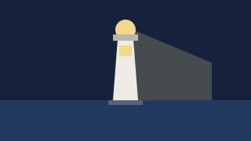
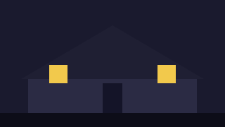
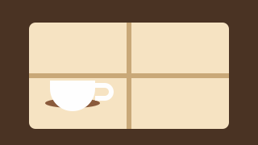
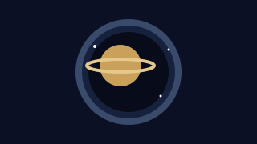
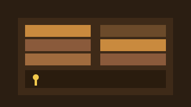
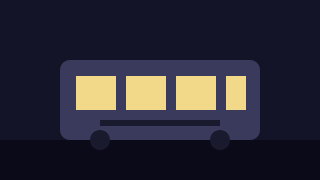

Пропавший маяк
Смотритель исчез в штормовую ночь. Восстановите картину событий по судовому журналу, письмам и следам на пристани.
«Точка и клик» собирает приключенческие игры, в которых историю двигают внимательность и курсор, а не скорость реакции. Каждая карточка каталога — это короткое описание квеста и его главные характеристики: жанр, год выпуска, сложность загадок и примерное время прохождения.
Заполните любое количество полей — сейчас форма только собирает условия, поиск по ним появится в следующих лабораторных работах.
Шесть историй разной длины и сложности: от трёхчасовой комедии до девятичасового хоррора. Все данные пока хранятся прямо в разметке страницы.

Смотритель исчез в штормовую ночь. Восстановите картину событий по судовому журналу, письмам и следам на пристани.

Восемь комнат, один наследник и семейная тайна, которая не любит гостей. Классический хоррор с инвентарём и записками.

Тёплая комедия о баристе, который пытается спасти кофейню и заодно разобраться в чужих историях за стойкой.

Экипаж орбитальной станции не отвечает. Доберитесь до пульта управления и решите, кого спасать первым.

Каталог перепутан, а за переставленными книгами спрятаны подсказки. Разгадайте шифр хранителя до закрытия читального зала.

Последний трамвай едет по маршруту, которого нет на карте. Найдите способ сойти на своей остановке.
Введите часть названия в поле поиска или выберите жанр и сложность в разделе «Поиск по каталогу».
В каждой карточке указаны жанр, год выпуска, сложность загадок и примерное время прохождения — этого достаточно, чтобы выбрать квест под настроение и свободный вечер.
Для короткого вечера подойдут «Кофейня на Второй улице» и «Тайна старой библиотеки», для длинного — «Пиксельный особняк» и «Полночный трамвай».
«Точка и клик» — учебный проект: каталог приключенческих игр, в которых персонажем управляют мышью, а прогресс зависит от внимательности, а не от скорости реакции. Сейчас это статическая страница: описания квестов и их характеристики находятся прямо в HTML, а форма поиска только собирает условия.